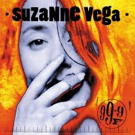

Rock In This Pocket
Excuse me If I may Turn your attention My way One moment I won’t plead It isn’t much It’s what I need And what’s so small to you Is so large to me If it’s the last thing I do I’ll make you see If you turn from me You darken my sun You snap that thin thread I call my horizon And I’d like to remind you Of something small That the rock in this pocket Could cause your fall And what’s so small to you Is so large to me If it’s the last thing I do I’ll make you see So small to you And so large to me If its the last thing I do I’ll make you see I might be out like a light Extinguished in the throw But I’ll hit my mark And you’ll know Because I’m really well acquainted With the span of your brow And if you didn’t know me then You’ll know me now You’ll know me now And what’s so small to you Is so large to me If its the last thing I do I’ll make you see So small to you And so large to me If it’s the last thing I do I’ll make you see Make you see Make you see
Blood Makes Noise
I’d like to help you doctor Yes I really really would But the din in my head It’s too much and it’s no good I’m standing in a windy tunnel Shouting through the roar And I’d like to give the information You’re asking for But blood makes noise It’s a ringing in my ear Blood makes noise And I can’t really hear you In the thickening of fear I think that you might want to know The details and the facts But there’s something in my blood Denies the memory of the acts So just forget it Doc. I think it’s really Cool that you’re concerned But we’ll have to try again After the silence has returned Cause blood makes noise It’s a ringing in my ear Blood makes noise And I can’t really hear you In the thickening of fear Blood makes noise…
In Liverpool
In Liverpool On Sunday No traffic On the avenue The light is pale and thin Like you No sound, down In this part of town Except for the boy in the belfry He’s crazy, he’s throwing himself Down from the top of the tower Like a hunchback in heaven He’s ringing the bells in the church For the last half an hour He sounds like he’s missing something Or someone that he knows he can’t Have now and if he isn’t I certainly am Homesick for a clock That told the same time sometimes you made no sense to me if you lie on the ground in somebody’s arms you’ll probably swallow some of their history And the boy in the belfry He’s crazy, he’s throwing himself Down from the top of the tower Like a hunchback in heaven He’s ringing the bells in the church For the last half an hour He sounds like he’s missing something Or someone that he knows he can’t Have now and if he isn’t I certainly am I’ll be the girl who sings for my supper You’ll be the monk whose forehead is high He’ll be the man who’s already working Spreading a memory all through the sky In Liverpool On Sunday No reason to even remember you now Except for the boy in the belfry He’s crazy, he’s throwing himself Down from the top of the tower Like a hunchback in heaven He’s ringing the bells in the church For the last half an hour He sounds like he’s missing something Or someone that he knows he can’t Have now and if he isn’t I certainly am In Liverpool [X2]
99.9F
99.9 Fahrenheit degrees Stable now, with rising possibilities It could be normal but it isn’t quite Could make you want to stay awake at night You seem to me Like a man 0n the verge of burning 99.9 Fahrenheit degrees Pale as a candle And your face is hot And if I touch you I might get what you’ve got You seem to me Like a man On the verge of running 99.9 Fahrenheit degrees Something cool Against the skin Is what you could be Something cool Against the skin Is what you Could be needing 99.9 Fahrenheit degrees You seem to me Like a man On the verge of burning 99.9 Fahrenheit degrees Something cool Against the skin Is what you could be Something cool Against your skin Is what you Could be needing 99.9 Fahrenheit degrees [X2]
Blood Sings
When blood sees blood Of its own It sings to see itself again It sings to hear the voice it’s known It sings to recognize the face One body split and passed along the line From the shoulder to the hip I know these bones as being mine And the curving of the lip And my question to you is: How did this come to pass? How did this one life fall so far and fast? Some are lean and some with grace, and some without; All tell the story that repeats Of a child who had been left alone at birth Left to fend and taught to fight See his eyes and how they start with light Getting colder as the pictures go Did he carry his bad luck upon his back? That bad luck we’ve all come to know And my question to you is: How did this come to pass? How did this one life fall so far and fast? When blood sees blood Of its own It sings to see itself again
Fat Man & Dancing Girl
I stand in a wide flat land No shadow or shade of a doubt Whore the megaphone man Met the girl with her hand that’s Covering most of her mouth Fall in love with a bright idea And the way a world is revealed to you Fat man and dancing girl And most of the show is concealed from view Monkey in the middle Keeps singing that tune I don’t want to hear it Get rid of it soon MC on the stage tonight Is a man named Billy Purl He’s The International Fun Boy And he knows the worth of beautiful girl Stand on the tightrope Never dreamed I would fall Monkey in the middle Keeps doing that trick It’s making me nervous Get rid of it quick I stand in a wide flat land No shadow or shade of a doubt Where the megaphone man Met the girl with her hand That’s covering most of her mouth Does she tell the truth? Does she hide the lie? Does she say it so no one can know? Fat man and the dancing girl And it’s all part of the show Stand on the tightrope Never dreamed I could fall Monkey in the middle Keeps singing that tune I don’t want to hear it Get rid of it soon Monkey in the middle Keeps doing that trick It’s making me nervous Get rid of it quick
(If You Were ) In My Movie
If you were in my movie I’d have you as the doctor Small black bag And a big black coat I’d have you make a house call To the woman You could lay your Diagnostic hand Upon her belly and her throat If you were in my movie You could be the detective You could sit behind the desk With a question on your lip Examine her for motive Investigate the scene In the ever present danger Keep the holster at your hip If you were in my movie If you were in my movie If you were in my movie If you were in my movie You could be the priest Long black frock White collar at the neck You could come to the confession You could give a girl a thrill You could save her from her passion Keep her body in check If you were in my movie If you were in my movie If you were in my movie If you were in my movie You could be the gangster Double-breasted pinstriped Man with the cigarette Go running down the alley With a double-crossing blond Explaining to the jury That you hadn’t done anything yet If you were in my movie…
As A Child
As a child You have a doll You see this doll Sitting in her chair You watch her face Her knees apart Her eyes of glass In a secretive stare She seems to [X3] Have a life Pick up a stick Dig up a crack Dirt in the street Becomes a town All of the people Depend on you Not to hurt them Or bang the stick comes down And they seem to They seem to [X2] Have a life As a child You see yourself And wonder why You can’t seem to move Hand on the doorknob Feel like a thing One foot on the sidewalk Too much to prove And you learn to You learn to [X2] Have a life
Bad Wisdom
Mother the doctor knows something is wrong Cause my body has strange information He’s looked in my eyes and knows I’m not a child But he doesn’t dare ask the right question Mother my friends are no longer my friends And the games we once played have no meaning I’ve gone serious and shy and they can’t figure why So they’ve left me to my own daydreaming What price to pay For bad wisdom What price to pay For bad wisdom Too young to know Too much too soon Bad wisdom [X2] Mother you’ve taught me the laws are so fine If I’m good that I will be protected I’ve fallen through the crack and there’s no getting back And I’ll never trust whoever gets elected Mother your eyes have gone suddenly cold And it wasn’t what I was expecting Once I did think that I’d find comfort there And instead you’ve gone hard and suspecting What price to pay For bad wisdom What price to pay For bad wisdom Too young to know Too much too soon Bad wisdom [X2] Mother I’m cut at the root like a weed Cause there’s no one to hear my small story Just like a woman who walks in the street I will pay for my life with my body What price to pay For bad wisdom What price to pay For bad wisdom Too young to know Too much too soon Bad wisdom [X2]
When Heroes Go Down
When heroes go down They go down fast So don’t expect any time to Equivocate the past When heroes go down They land in flame So don’t expect any slow and careful Settling of blame I heard you say You look out for the feet of clay That someone will be falling next Without the chance For last respects You feel the disappointment When heroes go down Man or woman revealed You can’t expect any kind of mercy On the battlefield I heard you say You look out for the feet of clay That someone will be falling next Without the chance for last respects You feel the disappointment When heroes go down Man or woman revealed Do you show any kind of mercy On the battlefield? When heroes go down [X3]
As Girls Go
You make a really good girl As girls go Still kind of look like a guy I never thought to wonder why If I could pull this off Would I know for certain The real situation Behind the curtain So beautiful damsel in distress Not exactly natural Stunning none the less What happened to you? To make you more girl than girls are Would you ever show or tell Cause you’re so good so far You make a really good girl As girls go [X5] Let’s chronicle The dark side of the life Did you ever keep the date With the steel side of the knife Doesn’t matter to me Which side of the line You happen to be At any given time You make a really good girl As girls go [X5]
Song Of Sand
If sand waves were sound waves What song would be in the air now What stinging tune Could split this endless noon And make the sky swell with rain If war were a game that a man or a child Could think of winning What kind of rule Can overthrow a fool And leave the land with no stain.